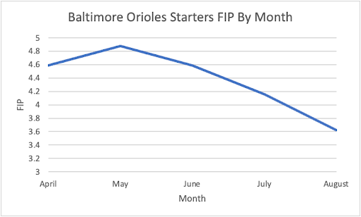
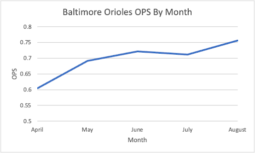

The Little Bird That Could: Analyzing the Orioles’ Surprising Season
by A. Carreno
Posted on 08/26/2022
Let’s set the scene: it’s a routine day in late March. Baseball season is just around the corner. Teams are wrapping up spring training and preparing themselves to begin the regular season. 21 year old Jimmy is sitting at a table, chatting it up with his friends: avid, young sports fans (who are probably not averse enough to risk as their drinking and studying habits demonstrate, but whatever, you’re only young once), and they are discussing an incredibly serious topic: their fantasy baseball league, obviously. To decide the drafting order, everyone rolls dice, the results from highest to lowest determining order. Reacting quickly, Jimmy grabs the dice before his friends can. Now, taking a deep breath, and looking above to the heavens for luck because Jimmy knows this roll will determine whether or not he gets married, has a family, and gets that sweet Lamborghini he saw the other day, he rolls the dice. Snake eyes. Immediately, the table erupts with laughter at Jimmy’s expense. He groans in dismay. He’s just bought himself a one way ticket to getting the last pick. Now since Jimmy’s from the Northeast, naturally, him and his friends bet big on the AL East teams. And since he’s last pick, Jimmy of course gets stuck with the Baltimore Orioles, the cold french fries at the bottom of the McDonald’s bag of major league baseball. This is a team that lost 110 games last season and has lost over 100 games in the past three full 162-game seasons*. Most notable baseball sites project them losing around 100 games again. Jimmy feels like he’s destined to lose money this year. But, like life, baseball is often unpredictable. Fast forward five months later and here we are: it’s the morning of August 26 and the Orioles are 65-59 and 2.5 games out of a playoff spot. Jimmy couldn’t be more thrilled, but he’s also in shock. How did this happen? Well, lucky for Jimmy and everyone else that this definitely happened to, an old friend you were bored to death by in high school named statistics can help tell the story of the Orioles’ success.
Though the traditional saying goes “defense wins championships,” I am more of the opinion that in baseball the saying is really “defense and pitching wins championships.” To win baseball games, you need to prevent more runs than you score. Defense is fine and dandy, but without quality pitching, you are bound to lose games. You need consistent starters that can at least eat innings and leave games in a competitive position to pass on to a lockdown bullpen that can hold leads, handle high leverage situations and can square up against most hitters (The way Paul Goldschmidt is playing this year, maybe I’d give them a pass there). The Orioles certainly have at least had the latter this year. Funny thing is though, their bullpen coming into 2022 was not seen as a particular area of strength. To the baseball world, it was a ragtag group of young guys that nobody had ever heard of (unless you’re a die hard Orioles fan, you better not lie to me and say you knew who Cionel Perez was before this season). Still, regardless of this group’s makeup and experience, this bullpen has posted a 3.16 ERA, 1.19 WHIP, and left 75.9% of runners on base so far, good for fourth, sixth, and second best in the entire league, respectively. The conclusions we can draw from these metrics are twofold. Firstly, they have in general (ERA is a flawed stat, but that’s another discussion) done a much better job at preventing runs compared to last year where Baltimore’s relief corps put up an abysmal 5.70 ERA, which was “good” for dead last. Secondly, and I’d argue more integral to this group’s success, is their ability to limit traffic on the basepaths and get important outs. The bullpen this year is in the top ten for fewest walks allowed and that speaks to how a lot of Orioles relievers are strike throwers. They attack the batter rather than nibble, and this has led to less unnecessary baserunners and more outs. I suspect this approach is also a large reason they have been able to leave more runners on base. By pitching aggressively, this bullpen has put itself in a position where it either gets the out or the batter succeeds in bringing in runs, which has evidently happened not all that often. Headed by closer Felix Bautista and the aforementioned Cionel Perez, this bullpen has been one for the ages in Baltimore and promises to be an intimidating force should the team make it to October.
Now in terms of starting pitching, there is less reason to celebrate, but still some. First, we have to give credit where credit is due. The Orioles have two large disadvantages in the form of losing ace John Means to Tommy John surgery and having to pitch in a launchpad of a ballpark (though it is better than before, more on that in a second). These two factors being considered, Baltimore starters have still improved a lot over last year. They have posted a 4.53 ERA (4.39 FIP) and 1.37 WHIP this year. By no means flattering or award-winning marks, but when you look at last year’s 5.99 ERA and 1.51 WHIP, the only way you can really go is up, and this is still objectively considerable improvement. What’s more, Orioles starters have been consistently improving throughout the season. Nearly every month, Oriole starters' FIP has decreased from the previous month. And for those of you baseball stats newbies, FIP (Fielding Independent Pitching) is a metric that is ERA scaled and essentially measures a pitcher’s performance independent of factors he cannot control (primarily defense) by disregarding results on balls put in play, though it does still consider home runs, since those are out of play technically. Anyway, as the following graph shows, Orioles starters have been performing better with nearly each passing month.
This year, the Orioles' starters have managed to decrease their FIP every month except May. (Data from Fangraphs.com)
Again, Baltimore starters are hardly lighting the world on fire. Overall, they still rank near the bottom five in terms of ERA and FIP for the MLB. However, they have done well enough to leave the game in the hands of their offense and bullpen. They’ve also had the luxury of being backed by a rock solid defense that has turned the fifth most double plays in the big leagues and is in the top ten for DRS (Defensive Runs Saved) as well. That said, the most impressive performances from Orioles starters have come from Dean Kremer and Austin Voth, who Baltimore picked up from the Nationals mid-season. These two guys, who mind you were on absolutely nobody except their family’s and maybe that local crazy homeless guy’s radar, have both really picked up the slack for John Means being MIA, each posting ERA+s of 116 and 141, respectively. And to make sure there’s no confusion, ERA+ is a metric that accounts for external factors (mostly ballpark factors) while normalizing a player’s ERA across the league by setting the average at 100. So Kremer’s 116, for example, indicates his performance is 16% better than the league average. But, in general, has Baltimore’s starting pitching been good? In a word, no. However, good enough to win enough ball games? Yeah, one could arguably say so.
With that being said, now it’s time to evaluate what people show up to baseball games for: the offense. Firepower equals attention. It’s very simple. People get in their seats expecting to see high flying long balls and scorching line drives that take fielder’s gloves off. Without offense, it is impossible to win a ballgame. You can trot out fifteen Cy Young caliber pitchers in a game to deliver perfection every time, but without your offense scratching across at least one run, the best you can hope for is a perpetual tie in a never ending scoreless game. But let’s just say that strategy is a) boring and b) not going to win you ball games. That’s why offense is paramount. And when we’re talking about the Orioles offense, it’s a similar story to their starting pitching. It is by no means excelling in any way and pitchers aren’t exactly tossing and turning in bed having nightmares about facing the Baltimore offense, but it gets the job done in a year where offense has taken a big hit from 2021. Compared with last year, league average BA, OBP, and SLG are all down. Baltimore is no exception here as it has declined in all of these statistics. That said, these statistics don’t tell the complete story. To explain the drop in these surface metrics, you’ve got to consider the fact that offense is down in general this year, sure, but there’s an even larger factor at play here: management had the left field fence pushed back 26 and a half feet before the start of the season. That left field fence which was once a great asset for righty sluggers and made it easier for lefties to go to the opposite field is now a liability for hitters, and these guys are playing half of their games in this ballpark. Understandably, surface offensive numbers have dropped slightly as a result. That said, this offense is still better than last year’s all things considered. Looking at advanced metrics such as wOBA (weighted OBP as it assigns different values to all methods of getting on base) and WRC+ (normalized park factor adjusted version of Runs Created), Baltimore has improved in both of these this year. Because these metrics are much more holistic than your average metric in taking into account the particular circumstances of a season and team, we can rely on these for better evaluation. WRC+, in particular, points to Baltimore having an above average offense as it has posted a 101 (average is 100). And look, yeah it’s barely better than league average, but it’s still miles better than last year’s 91, so enough said: they have improved offensively to an extent. And just like their pitching, the offense has improved over time. Baltimore’s OPS has increased nearly every passing month. Check out the graph below.
Like their rotation's FIP, Baltimore's offense has seen their OPS increase all but one month this season. (Data from Baseball-Reference.com)
The offense has certainly been there, especially recently, and is a big part of their incredibly unexpected season. I would also be remiss to not mention the contribution of catcher Adley Rutschman to the offense as well. Ever since being called up on May 21, Baltimore has gone 48-34, the third best record in the American League during that timespan. The solid performances of Cedric Mullins, Anthony Santander, and Ryan Mountcastle are all worth noting too. Each has put average to above average offensive numbers in an offensive down year. Also, side note, Baltimore has been terrific on the basepaths posting the second highest UBR (Ultimate Base Running) in the league at 9.4. This indicates they have made very few unnecessary outs on the basepaths and often successfully take extra bases when possible. That will never hurt you as a team. So with all these performances and factors considered, it’s more than fair to say Baltimore’s offense has done well enough to give its pitchers decent support and its team a chance in most games.
All told, it’s been an interesting season for the Baltimore Orioles. Predicted to be the laughing stocks of the AL East once again, they have been anything but. They are giving playoff teams runs for their money and shocking the entire baseball world while doing so. That said, collectively speaking, this is not a good baseball team. Most of their offensive and pitching (at least starting pitcher wise) statistics indicate roughly average performance. A vast improvement over 2021, but not exactly the kind of performance you’d expect from a playoff caliber team. That said, they are playing in arguably baseball’s toughest division. It also doesn’t help going forward that they traded their best hitter (Trey Mancini) and all star closer (Jorge Lopez) at the trade deadline. Yet, despite these disadvantages, they just keep steadily pulling out wins. Will they cool off? Only time will tell. But for now, you better believe Jimmy is enjoying the ride and so are Baltimore Orioles fans.
*All statistics in this article are from ESPN, Baseball Reference, or Fangraphs.